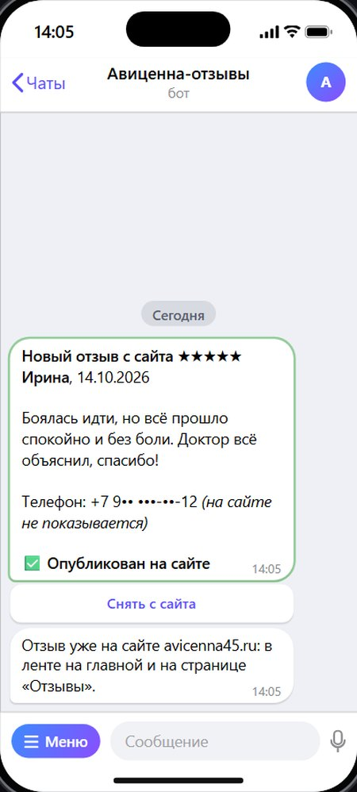
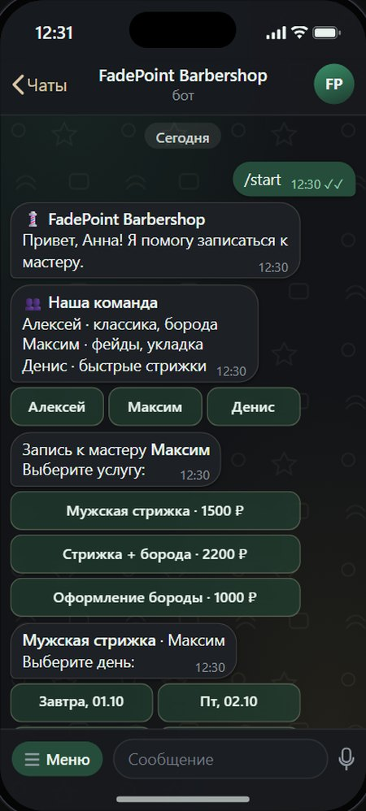

Примерклиника публикует отзыв одной кнопкой
Умный бот для модерации отзывов и заявок в MAX
Бот в мессенджере MAX работает от имени вашей компании: принимает отзывы и заявки с сайта, отвечает клиентам, записывает и напоминает. Всё управление в привычном мессенджере, прямо с телефона.
Как пример: бот отзывов, который я сделал для стоматологии «Авиценна». Он уже работает.
Бот отзывов для стоматологии «Авиценна»
Пациент оставляет отзыв на сайте avicenna45.ru, клиника получает его в MAX и публикует одной кнопкой: отзыв сразу появляется на сайте.
Какая была задача
- Отзывы прямо на сайтеЧтобы пациенты видели свежие отзывы, а не только старые на картах.
- Клиника решает самаЧто публиковать, а что нет, без звонков программисту.
- Без лишних программНикаких админок и паролей: всё в мессенджере, который уже стоит на телефоне.
Что я сделал
- Форма отзыва на сайтеЗвёзды, имя и текст. Заполняется за минуту с телефона.
- Бот в MAXПрисылает каждый отзыв со звёздами и кнопками «Опубликовать» и «Отклонить».
- Публикация одной кнопкойОтзыв сразу появляется на сайте. Если передумали, его можно снять.
- Средняя оценка самаЗначок с оценкой и числом отзывов на сайте пересчитывается после каждого нового отзыва.
- Телефон пациента виден только клиникеНа сайт попадают только имя, оценка и текст.
Бот оформляется на вашу организацию
В MAX ботов создают только проверенные организации: ООО, ИП или самозанятый. Бот привязан к ИНН вашей компании, поэтому он принадлежит вам, и никто, кроме вас, им не распоряжается.
Так сделали и для «Авиценны»: бота зарегистрировала сама клиника на свою организацию, а настройку и связь с сайтом сделал я.
- Привязка к организацииПомогаю подтвердить профиль компании через Госуслуги или банк по ИНН.
- БрендингОформляю имя, аватарку и описание бота под айдентику бренда.
- Интеграция APIПодключаю сайт к боту по защищённому токену, без доступа к вашим личным кабинетам.
- ЗапускОтзывы с сайта приходят в мессенджер с кнопками «Опубликовать» и «Отклонить».
Что ещё умеет бот в MAX
Отзывы только начало. Бот в MAX может взять на себя много рутины, которую сейчас делает администратор.
Ботов может быть несколько, каждый под свою задачу: один записывает клиентов, другой собирает отзывы, третий присылает заявки команде. Или один бот, который делает всё сразу.
Например: ответы и запись
- Пишет боту вопрос в любое время
- Сразу получает ответ: цена, адрес, часы
- Выбирает день и свободное время
- Получает подтверждение и напоминание
- Видит новую запись в MAX
- Не тратит время на одни и те же вопросы
Примеркак бот может отвечать и записывать

Следующий кейс · Бот в TelegramБот онлайн-записи для сферы услуг